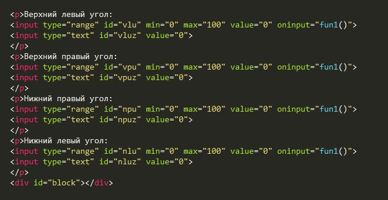
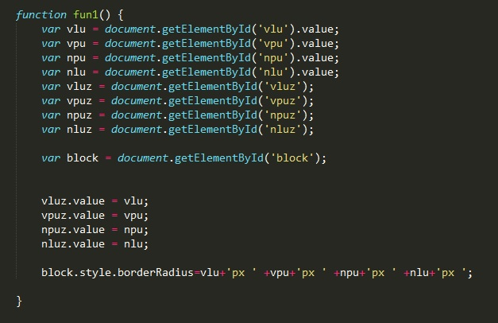

Верхний левый угол:
Верхний правый угол:
Нижний правый угол:
Нижний левый угол:
Рассмотрим код html
Здесь особое внимание хочется уделить на событие которое мы обрабатываем у input. Атрибут событий oninput позволяет задать срабатывание скрипта, когда элемент получает ввод данных от пользователя. Это событие аналогично событию onchange. Разница заключается в том, что событие oninputhtml5 происходит сразу после того как значение элемента изменилось, а событие onchange происходит, когда элемент теряет фокус.
Теперь рассмотрим код JavaScript
Сначала мы объявляем девять переменных типа каждого элемента документа. Далее мы присваиваем значениям value каждого input-text, значения value бегунка. И в самом конце мы для переменной типа block указываем стили для свойства borderRadius. Важно не напутать с соединением строк.